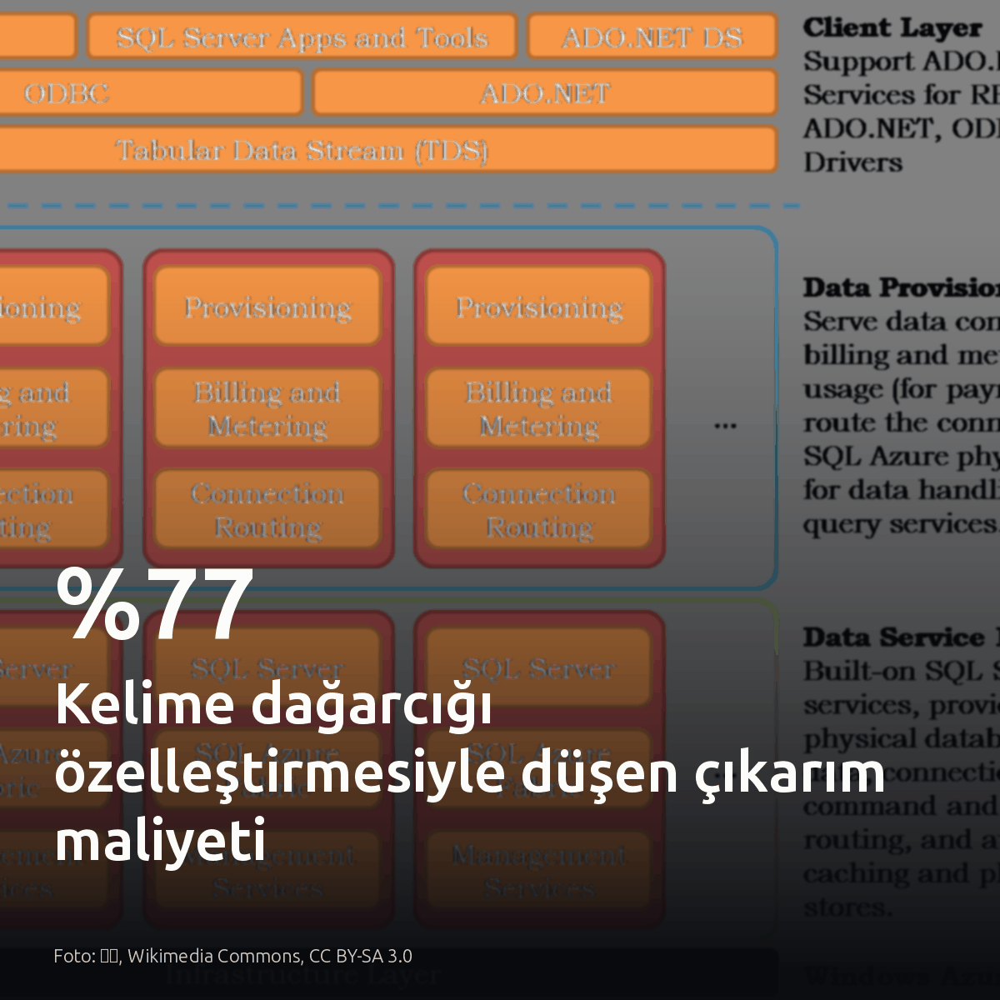
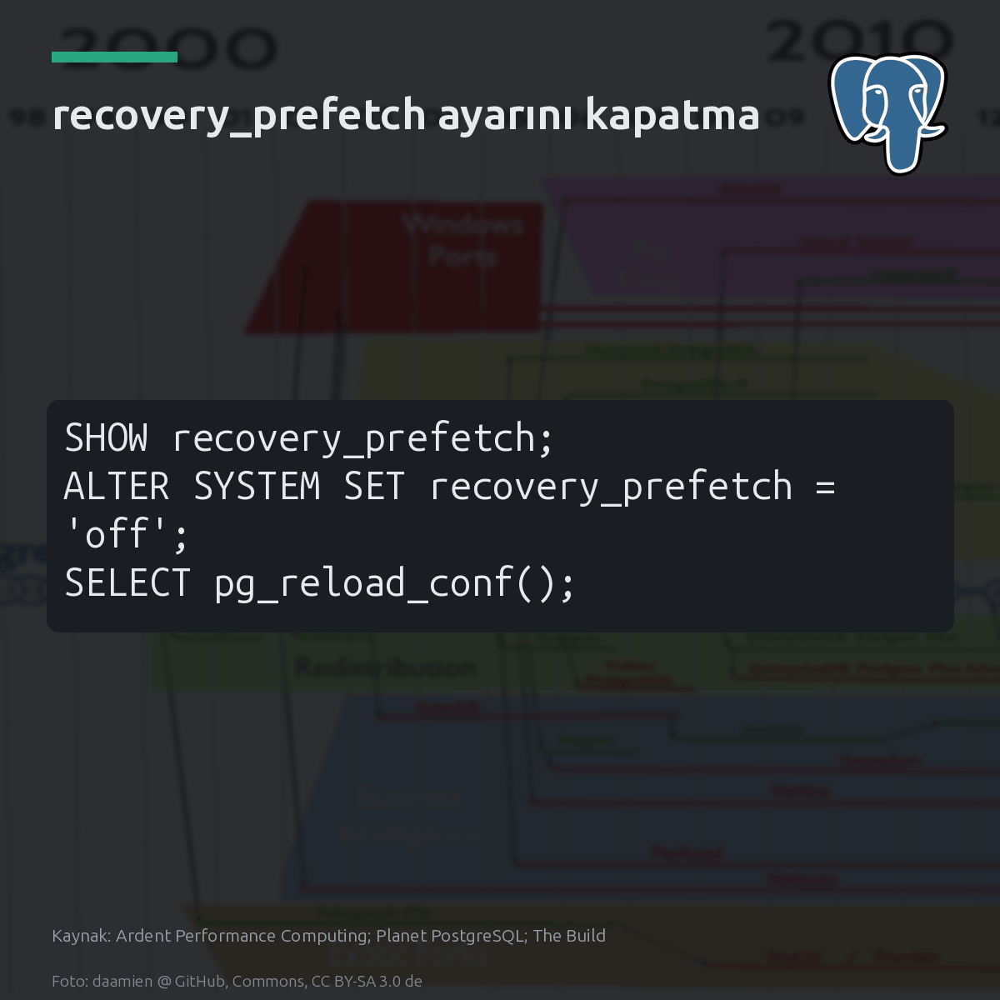
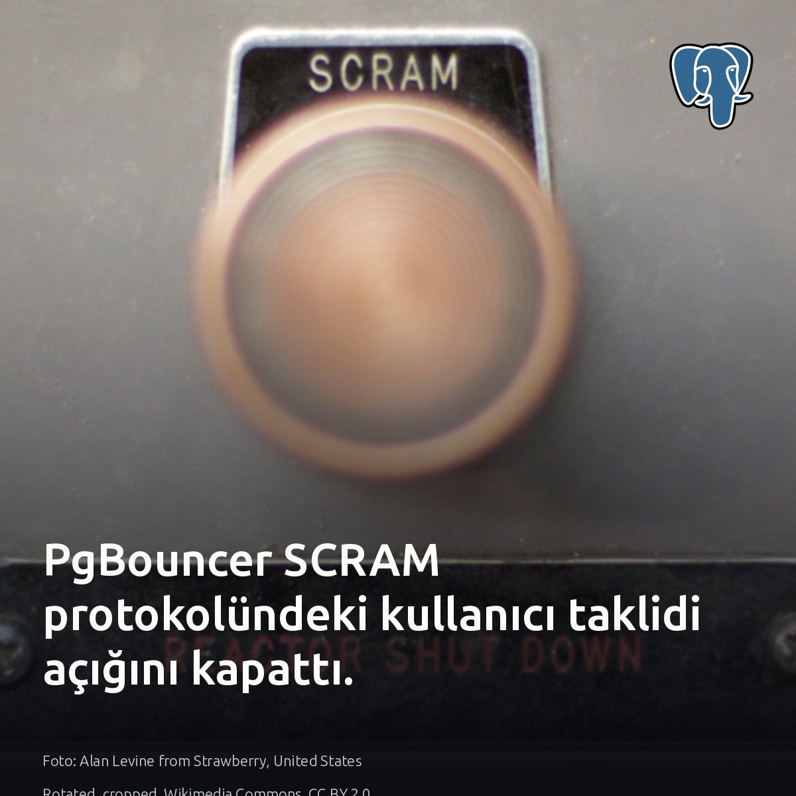
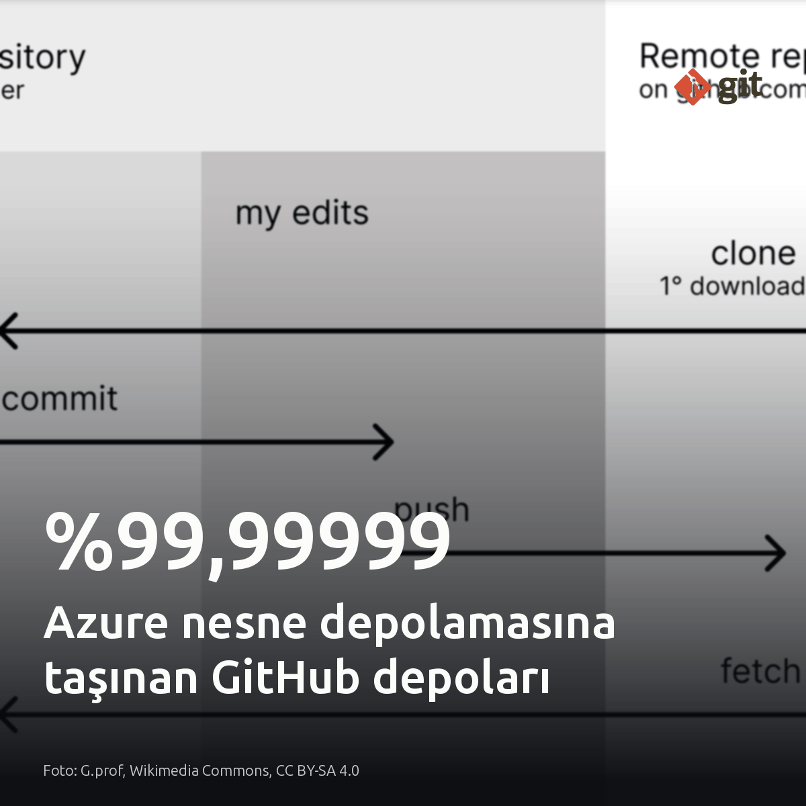
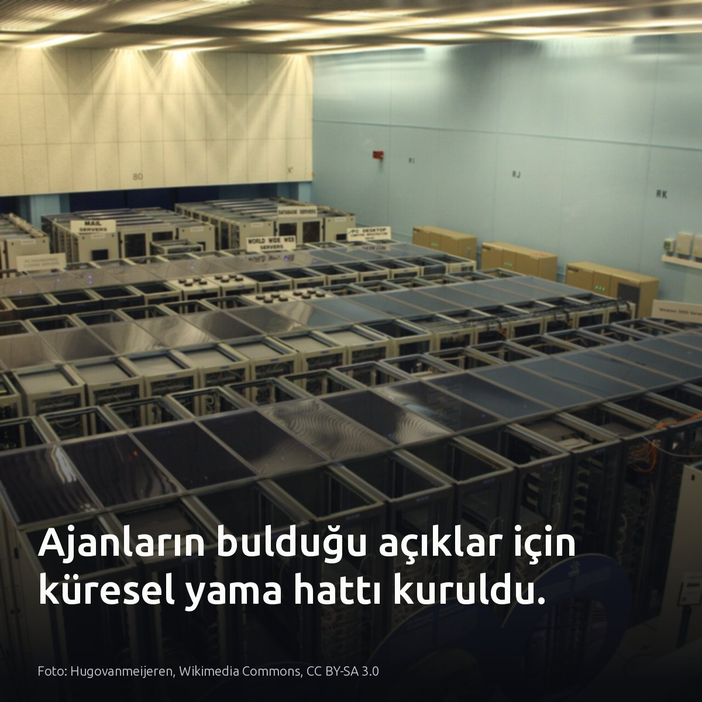

Metni kopyala, kartı indir, LinkedIn'de yapıştır. Bağlantılar gönderiye değil ilk yoruma.

Küçük dil modellerinde sözlük dağarcığını özelleştirmek, çıkarım maliyetini %77 düşürüyor. Fark LM head matrisinde. Qwen3-4B gibi bir modelde bu matris tek başına parametrelerin neredeyse %10'unu oluşturuyor. Genel sözlük yerine yalnızca SQL ve log terimlerini tutmak, yerel GPU yükünü doğrudan hafifletiyor. #slm #localllm #llmopsKartı indir
Detaylar ve kaynak çalışma: Hugging Face / VocabX: https://huggingface.co/blog/Dharma-AI/vocabx-vocabulary-specialization

recovery_prefetch, PostgreSQL replikalarında okuma IOPS yükünü 16 kata kadar büyüterek kesintiye yol açabiliyor. Disk kuyrukları hızla kilitleniyor. Özellikle ağ depolamasında ana düğümün sıralı I/O yükü replikaya bindiğinde, eşzamanlı replikasyondaki yazmalar 30 dakikadan uzun süre askıda kalabiliyor. Ancak yerel NVMe diskler üzerinde çalışan ve bant genişliği kısıtı bulunmayan ikincil düğümlerde bu risk geçerli değil. #postgresql #dba #storageKartı indir
Analiz ve vaka detayları: - Jeremy Schneider (Ardent Performance Computing): https://ardentperf.com/2026/10/20/postgres-recovery_prefetch-considered-harmful-and-causing-outages/ - Planet PostgreSQL: https://postgr.es/p/9zf - Christophe Pettus (The Build): https://postgr.es/p/9zw Görsel kaynağı: Ardent Performance Computing; Planet PostgreSQL; The Build

PgBouncer arkasında SCRAM varken kullanıcı taklidinin imkansız olduğu varsayımı çöktü. Normalde bu protokol, tarafların parolayı paylaşmadan birbirini doğrulamasını eksiksiz sağlar. Sorun şifrelemede değil, havuzda. Etkilenen sürümlerde kimlik doğrulama akışına ikinci bir startup paketi ekleyen istemci, tek parolayla başka bir SCRAM kullanıcısının kimliğine bürünebiliyor. PgBouncer ekibi bugün yayımladığı yamayla bu açığı kapattı. Yamalanmamış havuzlarda kullanıcı bazlı yetki izolasyonu varsayımı geçersizdir. #pgbouncer #postgresql #databasesecurityKartı indir
Kaynaklar ve detaylar: - Görsel: Alan Levine from Strawberry, United States (Wikimedia Commons, CC BY 2.0) - [S1] PgBouncer SCRAM zafiyeti: https://medium.com/tech-and-ai-guild/pgbouncer-patched-an-auth-bug-that-could-turn-one-password-into-another-user-344b1dd29a2e?source=rss------postgresql-5 - [S2] PgBouncer ve SCRAM doğrulaması: https://info.crunchydata.com/blog/pgbouncer-scram-authentication-postgresql

GitHub, depolarının %99,99999'unun bir kopyasını Azure nesne depolama katmanına taşıdı. Yapay zekâ ajanlarının yoğun Git trafiği, yerel disklerde ciddi bir I/O darboğazı yaratıyordu. Çözüm, depolamayı durumdan ayırmaktı. Dayanıklılık amacıyla beş kopya tutulan mimaride, referans mutabakatı nesne depolamadan bağımsız hale getirildi. Artık depoların iki kopyası Azure üzerinde duruyor ve Git trafiğinin yaklaşık yarısına hizmet veriyor. Bu sayede farklı referanslara yazma işlemlerinde 3–4 kat daha yüksek iş hacmi ve düşük gecikme sağlandı. Kilit yönetimini yerel diskten kurtarmak, depolama katmanının bağımsız ölçeklenmesini sağlıyor. #git #infrastructure #storageKartı indir
İncelemek isteyenler için mimari raporun ve kaynakların bağlantısı: GitHub Engineering: https://github.blog/engineering/architecture-optimization/the-bridge-to-agent-scale-git-infrastructure/

Ajanların açık bulma hızı, geleneksel hata bildirimlerinin savunma penceresini fiilen sıfırladı. Modeller kritik PHP zafiyetlerini saldırganlardan önce yakaladı; yamaları hazırlamak iki aylık koordineli bir çalışma gerektirdi. Zafiyet bulguları hızla artacak. Burada belirleyici tek ölçüt savunma penceresidir. Rutin kod hatalarında bireysel bildirimler yeterli kalır; ancak yapay zekâ taramalarının hedefindeki kritik altyapı bileşenlerinde tek çözüm küresel koordinasyon hattıdır. Kümelerinizde çalışan açık kaynak servislerin yama uygulama gecikmesine bakın. #opensource #infosec #devopsKartı indir
Kaynaklar ve detaylar: • Görsel: Hugovanmeijeren, Wikimedia Commons, CC BY-SA 3.0 • Patch the Planet ve PHP koordinasyon süreci [S1, S2, S4, S5]: https://openai.com/index/coordinated-disclosure-of-critical-vulnerabilities • Daybreak savunma desteği [S3]: https://openai.com/index/coordinated-disclosure-of-critical-vulnerabilities/